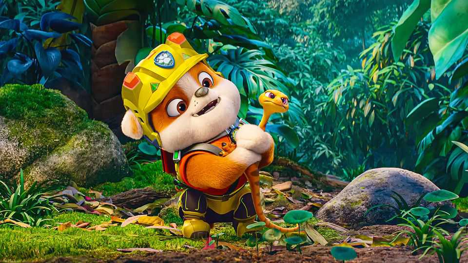

The dark underbelly of “Paw Patrol”
Why a debate over a hit cartoon is more than culture-war madness

Aug 13th 2026
They may look like a pack of cutesy anthropomorphised dogs. “No job is too big,” vows their heartwarming motto, “no pup’s too small!” Don’t be fooled: some say the cartoon heroes of “Paw Patrol” are covert outriders for authoritarian capitalism. “Keep trying, everybody makes mistakes,” a winsome character urges in their latest outing, “Paw Patrol: the Dino Movie”. The haters have a slogan too: “Defund the Paw Patrol!”
If you haven’t had a pre-school child (or been one) since “Paw Patrol” first aired on TV in 2013, it may have passed you by. But it is a world-conquering juggernaut, spanning more than a dozen seasons, a toy empire and now three theatrical film releases. Critics—perhaps including parents aggrieved at enduring so much schlock—have avidly dissected its subliminal messages. Hearing about this is like coming late to the manosphere; both, you find, are amazingly popular and allegedly pernicious.
For the blissfully uninitiated: the show is set in idyllic but slightly creepy Adventure Bay, where children drive and puppies talk. Led by a lavishly quiffed ten-year-old boy, a group of heroic pups respond to mild emergencies, setting off down a fun slide at their HQ. It is utterly formulaic, with incessant catchphrases (“Paw Patrol is on a roll!”) and appalling earworm music. “A children’s story which is enjoyed only by children”, wrote C.S. Lewis, “is a bad children’s story.” He would not have liked “Paw Patrol”.
The main baddies are a guy called Humdinger and his villainous kittens (the franchise is an extended libel against cats). In the first movie, he takes over the metropolis of Adventure City and installs rollercoaster loops in the subway. In the second, a fallen meteor gives the pups magic powers. In the new film they wash up on an island inhabited by dinosaurs: some huge, some petite and sweet, none apparently carnivorous. Humdinger covets the island’s diamonds.
Superficially, if “Paw Patrol” has politics, they are clunkily left-wing. Humdinger is a blond narcissist who has his own plane, builds a phallic tower and disdains “free and fair elections” and the law. The pups protect the environment as well as people and creatures; they are surprisingly keen on recycling. The saccharine morals—about teamwork, facing your fears and other such soppy uplift—are vaguely leftish in today’s dog-eat-dog world.
But that may just be what they want you to think. Of the core gang of six pups, some critics note, only one is a girl, whose outfit and even eyes are pink. Worse, the top dog, Chase, is a police pup, so the whole thing is pro-police “copaganda”. Actually, since the patrol are unaccountable freelancers to whom a ditzy mayor defers, it is a sly advert for privatised state services. (Their funds come from merchandising, runs a winking joke—which may grate with those forking out for it.)
In short, fulminated a Guardian commentator, “Paw Patrol” is “authoritarian neoliberal propaganda”. An academic reckoned it “encourages complicity in a global capitalist system that (re)produces inequalities”. Rallying to the show’s defence, a former White House spokesperson wrongly claimed it had been cancelled. It is very tempting to dismiss the whole debate as killjoy hogwash and culture-war lunacy.
Tempting, but mistaken. It isn’t only that. There is, after all, a reason dictators try to control the stories told to the young. “Give me the child until he is seven”, the Jesuits’ founder supposedly said, “and I will show you the man.” Books, films and, yes, cartoons impart values and lessons. A sensation like “Paw Patrol” is doing a lot of imparting, and evidently resonating with youngsters everywhere. The takeaways of a critical theorist, however, may not be those of a four-year-old unfamiliar with Ayn Rand.
To understand the deep meaning of “Paw Patrol”, the best tool may not be ideology but psychoanalysis. One of its tenets is that many children want desperately to heal their parents, partly for their own well-being, sometimes taking on parental roles themselves. This is the psychic backdrop to tales of young protagonists fixing grown-up woes, from Enid Blyton to Harry Potter.
The “Paw Patrol” generation have overheard their parents freaking out about politics, war, inflation, the coronavirus and climate change. The action is stuffed with pre-school wish fulfilment, as the pups—avatars for the viewers—eat unlimited treats and play unsupervised with super-cool kit. Perhaps another wish it powerfully fulfils is for kids to be able to solve their elders’ problems. No pup’s too small to notice them. ■